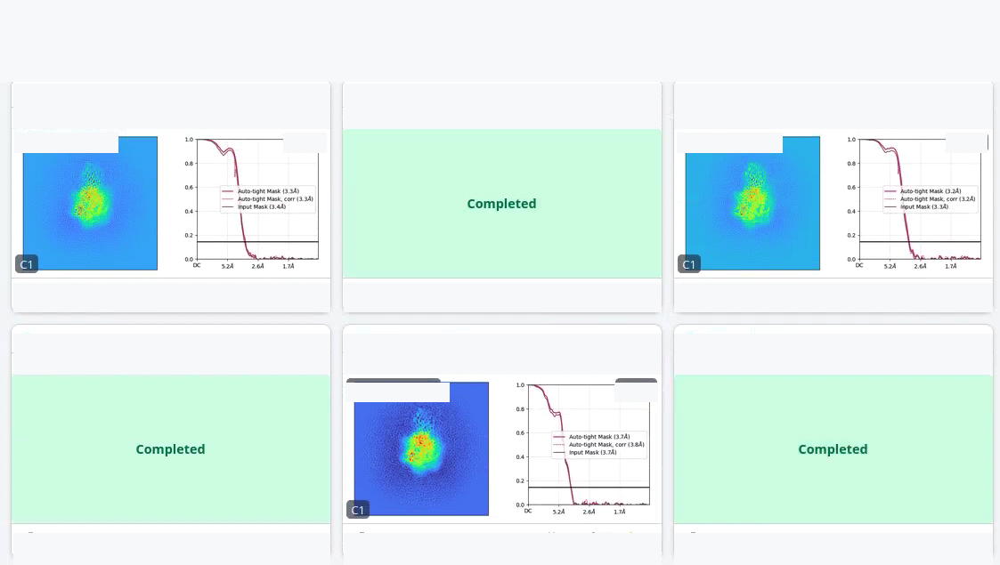

What the skill does
Consult
Answer cryoSPARC questions using a lean SKILL.md router plus 35 on-demand Markdown references covering parameters, workflows, masks, symmetry, orientations, troubleshooting, and RELION interop.
Inspect results
Pull a finished job’s assets through cryosparc-tools — FSC, cFSC, viewing-direction, B-factor, scale-factor — and summarise what they mean.
Launch jobs safely
Build, launch, and chain new jobs against a live cryoSPARC instance, with explicit user confirmation of project / workspace / lane / params before anything starts.
The skill is one folder of plain Markdown plus a Python helper. There is no hidden server component and no model-specific glue. It is independent and unofficial; authoritative details remain in the upstream cryoSPARC documentation and license terms.
Install
This unofficial skill ships as part of StructAgent — see the accompanying paper, StructAgent: Orchestrating Cryo-EM Model Building and Refinement with a Multi-Agent LLM System (Guo, bioRxiv 2026), for the broader system. The AI agent skill for cryoSPARC itself is self-contained and can be dropped into any coding-agent runtime that can load an instruction file and run shell or Python tools.
Actual skill files
The installable skill lives here: github.com/bhgtiger/StructAgent/tree/main/skills/annika/cryosparc. The folder now includes its own README.md with install, porting, site-config, and safety instructions.
Claude Code
$ git clone https://github.com/bhgtiger/StructAgent.git
$ mkdir -p ~/.claude/skills
$ cp -R StructAgent/skills/annika/cryosparc ~/.claude/skills/Codex CLI / other agent runtimes
Point the runtime at the same folder; the only requirement is that it can read the files on demand and run an approved Python script.
$ cp -R StructAgent/skills/annika/cryosparc <your-agent-skills-dir>/Resulting layout
cryosparc/
├── README.md # install, porting, site-config, safety instructions
├── SKILL.md # entrypoint, routing, safety rules
├── lessons.md # site/user lessons placeholder
├── references/ # 32 markdown reference files
└── scripts/
└── cryosparc_harness.py # read-only by default; --commit to queue| Concept | Mapping in any agent runtime |
|---|---|
README.md | Human-facing install, porting, local configuration, and safety instructions. |
SKILL.md | System / tool instruction module loaded when the user asks about cryoSPARC. |
references/ | On-demand reference files loaded only when relevant. |
lessons.md | Writable memory for confirmed local lessons. |
scripts/cryosparc_harness.py | Tool wrapper. Read-only by default; queueing requires explicit flags. |
Configure for your site
The skill becomes useful only after it learns the local deployment. Create a local, non-public site_config.md next to SKILL.md. Do not commit it.
# ~/.claude/skills/cryosparc/site_config.md
# Local file. Do not commit credentials.
## cryoSPARC instance
- master_url: http://xxx:xxx
- master_version: v5.x
- license_id: xxx
- cryosparc_tools_env: ~/.venvs/cs-tools-v5/bin/python
- default_lane: xxx
## Access rules
- Read-only inspection first.
- Queue only after explicit user confirmation of project_uid,
workspace_uid, lane, and params.
- Never store passwords or session tokens here.Credentials are passed via environment variables at run time, never written into the skill folder:
export CRYOSPARC_HOST='xxx'
export CRYOSPARC_BASE_PORT='xxx'
export CRYOSPARC_EMAIL='xxx@xxx'
read -s CRYOSPARC_PASSWORD
export CRYOSPARC_PASSWORDExample session
A short happy-path session against project Pxxx, showing the three capabilities back-to-back. The baseline is an existing local-refinement job, J{baseline}. A second scenario below shows the same skill running an entire cryoSPARC → RELION → cryoSPARC classification round-trip from a single instruction.
1. Consult — what parameters did this job change?
Check J{baseline} — what parameters did it change, and what could we try?Pulled J{baseline}’s params via cryosparc-tools and diffed against defaults. 5 of 78 parameters were non-default:
| Param | This job | Default |
|---|---|---|
use_alignment_prior | True | False |
sigma_prior_r | 10° | 15° |
sigma_prior_s | 10 Å | 7 Å |
refine_res_init | 3.6 Å | 12 Å |
refine_scale_min | True | False |
Reference 09_local_refinement.md gives a documented “small ROI” recipe of 3° / 1 Å priors + 9° / 3 Å explicit search extent. Three variants worth trying: tight (recipe values), medium (between recipe and current), reseed (same params, different random seed).
2. Check results — read the existing plots
What do J{baseline}’s plots say?Downloaded the iteration-2 plots via job.download_asset() and read them:
- GSFSC 3.22 Å with the auto-tightened mask (iter-0 3.05 Å with the input mask, no oscillation between halves).
- cFAR 0.72, cone resolutions 2.95 Å (best) → 3.39 Å (worst). The 3.22 Å headline is a geometric average over an anisotropic map.
- B-factor 106.5 Å2 from the Guinier plot — healthy for a ~3.2 Å map.
- Per-particle scale factors are a clean near-Gaussian around 1.0 (mean 1.008), so
refine_scale_minwas safe. - Viewing-direction distribution has a hot spot and a sparse zone — the anisotropy is driven by preferred orientation, not by the local-refine settings.
The headline number is honest at the average; the limiting feature is the orientation distribution upstream, not the local-refine dialog. Two options: (a) accept the anisotropy and tune locally with the 3-variant sweep above, or (b) rebalance the orientation distribution upstream and re-run with the same params, to isolate the effect.
3. Run — rebalance, then redo the local refinement
Do option (b): rebalance, then redo the local refinement with the same params.
Confirming before queueing:
- Step 1 —
rebalance_3DonJ{baseline}’s input particles, default params. - Step 2 —
new_local_refineon step-1 output + same volume / mask asJ{baseline}, params verbatim. - Workspace
Wxxx, lanexxx(matchesJ{baseline}’sresources_allocated.lane). - Sequential with
wait_for_done()between steps. ETA ~20 min.
OK to queue?
Yes.
Queued. Status:
| Job | Title | Status | Notes |
|---|---|---|---|
| J{baseline} | baseline local refine | completed | GSFSC 3.22 Å, cFAR 0.72 |
| J{rebalance} | Rebalance Orientations | ✓ completed | 55,715 / 80,164 particles kept (69.5%) |
| J{redo} | post-rebalance local refine | completed | finished at 3.30 Å |

What this shows
One short conversation covered all three capabilities: pulling parameters and recommending alternatives (consult), downloading and interpreting job assets (check), and queueing a multi-step protocol after explicit confirmation (run). The agent never touched anything destructive without asking.
A second scenario — one prompt, a full RELION round-trip
The session above was three separate questions. This one is the opposite shape: a single instruction, after which the agent runs an entire cryoSPARC → RELION focused 3D classification → cryoSPARC loop on its own — export, classify, map the classes back, rebuild one refinement per class — and pauses exactly once, at the single step that starts compute on the instance. The starting point is a consensus refinement J{src} (~258k particles, box 400 @ xxx Å/px). The question: is one small region of the map fully ordered, or only present in a subset of particles?
Starting from my consensus refinementJ{src}: I think one small region of the map is only ordered in part of the dataset. Using the focus maskxxx_mask.mrc, run a focused 3D classification on just that region in RELION with the cryoSPARC poses held fixed, then split the particles by class and bring each class back into cryoSPARC as its own whole-molecule refinement. Keep the native poses and CTF — don’t re-import the raw stacks.
Loaded the cryosparc skill (27_relion_interop.md for the metadata bridge, 23_external_jobs.md for carrying particle subsets back) plus the companion relion skill for the RELION binaries. This is a no-re-import round-trip: the classes get re-joined to the original particles by uid, so cryoSPARC poses + CTF stay native the whole way. Running the export, classification and build legs now; I’ll stop before anything queues on the instance.
1 · cryoSPARC → RELION. Exported J{src}’s particles with csparc2star.py (--boxsize 400), built a .mrcs symlink farm with absolute paths (the STAR says .mrcs while the data is .mrc on disk — the documented extension gotcha), and downsampled box 400 → 128 for classification (relion_image_handler). Re-softened the hard cryoSPARC mask for RELION (relion_mask_create --width_soft_edge 6).
2 · Focused Class3D, poses fixed. relion_refine --K 4 --skip_align over the masked region. First pass at low --tau2_fudge (T) collapsed — every particle fell into one class, the known small-mask failure mode — so I raised T; T=300 gave a balanced, reproducible 4-way split (a tiny mask needs a far higher T than a large one). RELION 5 runs --skip_align on CPU, so this leg used mpirun, ~2–3 min/iter × 25 iters.
| Class | State at the site | Fraction |
|---|---|---|
| c3 | both sub-features ordered | 38.5% |
| c4 | both sub-features weak | 54.6% |
| c2 | sub-feature 2 missing | 3.9% |
| c1 | sub-feature 1 weak | 3.0% |
In-mask CC 0.54–0.78 across classes.
3 · Map the classes back to uid. Joined the RELION run_it025_data.star rows onto the cryoSPARC particles by (stack file, in-stack index) → uid. Every particle matched (the join aborts on any unmatched row), so each class is a clean subset of the originals — no stack re-imported, poses + CTF untouched.
4 · Built on cryoSPARC (no compute yet). One External Job wrote a particle subset per class by uid; the harness then built one nonuniform_refine_new per subset in dry-run — whole molecule, no focus mask, initial model = the J{src} volume, refinement params read back from J{src} (inspect-job --print-specs). Everything is in building status; nothing is running.
Confirm before compute
Ready to queue 4 subsets + 4 whole-molecule refinements into Pxxx / Wxxx, lane xxx (the lane J{src} used). ~15 min each. This is the only step that starts jobs on the instance — queue them?
Yes, queue them.
Queued (--commit --queue --queue-confirm QUEUE) and waited. The per-class refinements were run without a focus mask, so they are an independent check on the focused classification — and they reproduce the split:
| Class → refine | State | Site density (σ over local background) |
|---|---|---|
J{src} | consensus (all particles) | both sub-features, averaged over states |
c3 → J{r3} | both ordered (38.5%) | sub-feature 1 +2.1 / sub-feature 2 +2.8 |
c4 → J{r4} | both weak (54.6%) | sub-feature 1 −0.2 / sub-feature 2 −0.6 |
(The two minor classes, c1/c2 at 3.0% / 3.9%, refined too but are too small to read confidently.)
Conclusion: the region is not uniformly ordered — it is fully present in only ~38% of the particles, while in the majority class the density is essentially gone. Because the confirming refinements carried no focus mask, the effect is real, not a classification-mask artifact. All jobs are in Pxxx / Wxxx; the class–uid assignment is saved for reuse.
What this shows
One instruction drove a full cryoSPARC → RELION → cryoSPARC heterogeneity round-trip. The agent owned the multi-tool plumbing across two skills (STAR/MRCS conversion, downsample, mask soften, focused --skip_align classification, the uid re-join, the per-class rebuild), recovered from the low-T collapse on its own, and — the point of the whole exercise — kept the cryoSPARC poses native by mapping classes back by uid instead of re-importing stacks, stopping for confirmation only at the single step that starts compute.

Snippets
Connect from Python
import os
from cryosparc.tools import CryoSPARC
cs = CryoSPARC(
license = os.environ["CRYOSPARC_LICENSE"], # xxx-xxx-xxx
host = os.environ["CRYOSPARC_HOST"], # xxx
base_port= int(os.environ["CRYOSPARC_BASE_PORT"]), # xxx
email = os.environ["CRYOSPARC_EMAIL"],
password = os.environ["CRYOSPARC_PASSWORD"],
)
assert cs.test_connection()Inspect a job’s params and assets
project = cs.find_project("Pxxx")
job = project.find_job("Jxxx")
# Parameters (full dict, including defaults)
params = job.doc["params_spec"]
# Asset listing (PNG / PDF plots, logs, ...)
for asset in job.list_assets():
print(asset["filename"], asset["_id"])
# Download one asset
job.download_asset(asset_id, "/tmp/out.png")Queue safely via the harness
# default: dry-run JSON only; no job is queued
$ python scripts/cryosparc_harness.py create-job \
--project-uid Pxxx --workspace-uid Wxxx \
--job-type new_local_refine \
--params-json '{"use_alignment_prior": true}'
# real queue only with explicit commit + queue + lane + confirmation word
$ python scripts/cryosparc_harness.py create-job \
--project-uid Pxxx --workspace-uid Wxxx \
--job-type new_local_refine \
--lane xxx --commit --queue --queue-confirm QUEUE